Symbol Evolution V7.1 · Engenharia reversa
Original × V7
Restauração matemática da coruja ContentFy em SVG puro. Sem redesign. Sem nova personalidade. Removidos apenas textura, glow, bevel e 3D.
1 · Comparativo
Original

DNA + textura + glow + relevo.
V7 restaurada
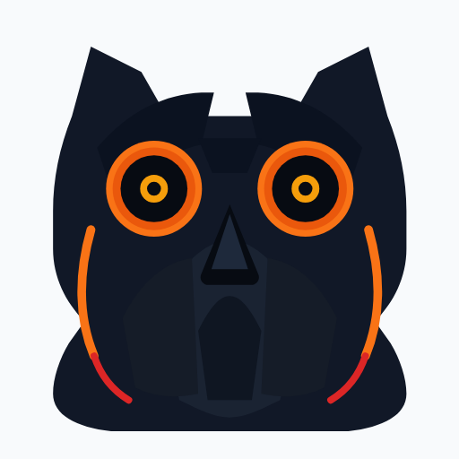
Mesma geometria · sólidos · premium.
2 · Sobreposição
Original (opaco) + V7 (55% opacidade). Desalinhamento = erro de restauração.
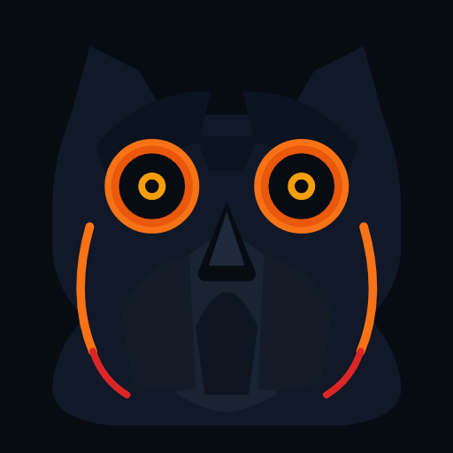
3 · Heatmap de diferenças
Blend difference: áreas claras = desvio (textura/glow removidos ou gap geométrico). Escuro = match.
4 · Grade + Safe Area
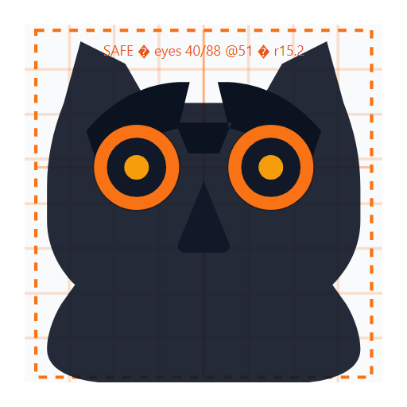
5–9 · Variantes
Master Color
Mono Dark
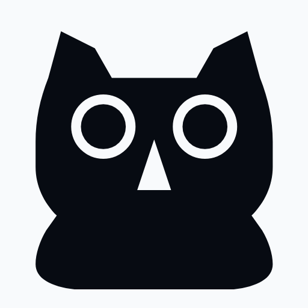
Mono Light
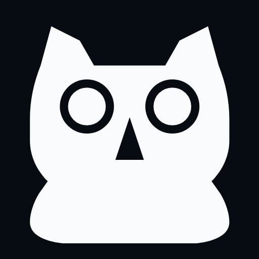
Outline
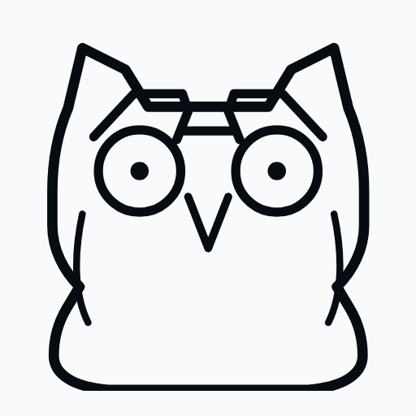
Silhueta
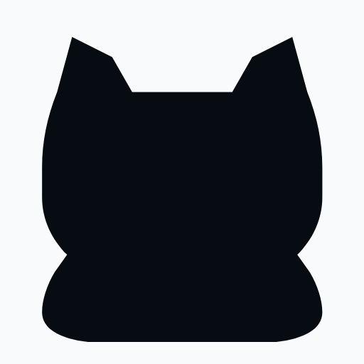
App / Fav / Avatar
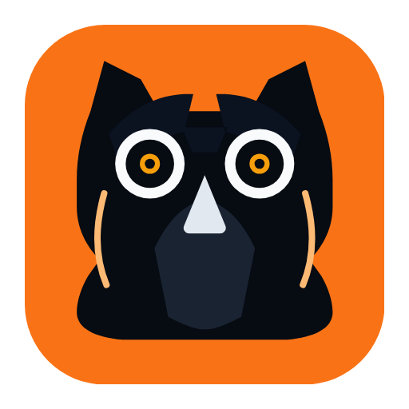
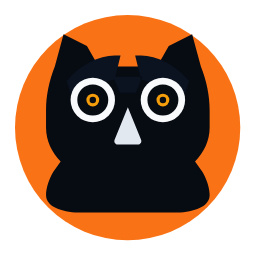
10 · Micro-mark (teste 2 metros)
11–13 · Lockups
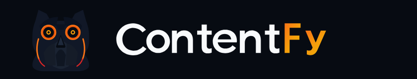
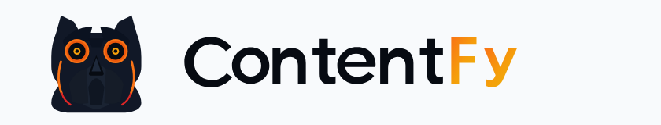
15 · Alterações documentadas
| Alteração | Por quê |
|---|---|
| Remoção de textura / bevel / glow | Efeitos datados; não são DNA estrutural |
| Anéis concêntricos sólidos | Recriam profundidade óptica sem sombra |
| Sobrancelhas V medidas | Autoridade — elemento #1 de reconhecimento |
| Olhos em 40/88, r=15.2 | Engenharia reversa do favicon 512 |
| Peito em planos flat | Mantém ritmo das penas sem escamas 3D |
| Acentos laterais sólidos | Assinatura da original, sem bloom |
| Wordmark / paleta intactos | Fora do escopo da restauração |
Documento completo: DNA-RESTORATION.md
Aguardando aprovação visual. Não implementado no app.